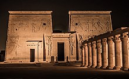

Inainte de renaștere
Arhitectura neolitică

Progresele arhitecturale sunt o parte importantă a perioadei neolitice (10.000-2000 î.Hr.), timp în care s-au produs unele dintre inovațiile majore ale istoriei umane. Domesticirea plantelor și a animalelor, de exemplu, a dus atât la o nouă economie, cât și la o nouă relație între oameni și lume, o creștere a dimensiunii și a permanenței comunității, o dezvoltare masivă a culturii materiale și noi soluții sociale și ritualice pentru a permite oamenilor să trăiască împreună în aceste comunități. Stiluri noi de structuri individuale și combinarea lor în așezări au constituit clădirile necesare pentru noul stil de viață și economie și au fost, de asemenea, un element esențial al schimbării.
Chiar dacă au fost descoperite multe locuințe aparținând tuturor perioadelor preistorice, precum și unele modele de lut ale unor locuințe care permit crearea unor reconstrucții fidele, rareori au fost incluse elemente care pot să le lege de artă. Unele excepții sunt oferite de ornamente de pe pereți și de descoperirile care se aplică în mod egal la riturile și arta neolitice și calcolitice.
În Asia de Sud și de Sud-Vest, culturile neolitice apar la scurt timp după 10.000 î.Hr., inițial în Levant (neoliticul preceramic A și neolitic preceramic B), iar de acolo s-au răspândit spre est și spre vest. Există culturi neolitice timpurii în sud-estul Anatoliei, Siria și Irak până în 8000 î.Hr., iar societățile producătoare de alimente apar pentru prima dată în sud-estul Europei până în 7000 î.Hr. și în Europa Centrală până în circa 5500 î.Hr. (dintre care cele mai vechi complexe cultural includ Starčevo-Koros (Criș) și Vinča).
Așezări și „orașe” neolitice includ:
- Göbekli Tepe din Turcia, circa 9000 î.Hr.
- Ierihon din Levant, neolitic din circa 8350 î.Hr., apărând din cultura epipaleolitică Natufi
- Nevalı Çori din Turcia, circa 8000 î.Hr.
- Çatalhöyük din Turcia, circa 7500 î.Hr.
- Mehrgarh din Pakistan, circa 7000 î.Hr.
- Knap of Howar și Skara Brae din arhipelagul Orkney (Scoția), circa 3500 î.Hr.
- peste 3500 de așezări ale culturii Cucuteni, unele cu o populație de până la 15.000 de locuitori, înflorind în ceea ce sunt azi România, Republica Moldova și Ucraina din 5400 î.Hr. până în 2800 î.Hr..
Oamenii neolitici din Levant, Anatolia, Siria, nordul Mesopotamiei și Asia Centrală au fost mari constructori, folosind chirpici ca să-și construiască sate și case. La Çatalhöyük, casele erau tencuite și pictate cu scene elaborate cu oameni și animale. Culturile neolitice mediteraneene din Malta își practicau religia în în temple megalitice.
În Europa, erau construite case vagon făcute din zăbrele. Au fost construite și morminte elaborate. Aceste morminte sunt deosebit de numeroase în Irlanda, unde există încă multe mii. Oamenii neolitici din Insulele Britanice au construit niște cămine lungi și morminte cu camere pentru morții lor și pe drumuri, au minat silex și monumente cursus.
Antichitatea
Mesopotamia
Mesopotamia antică este remarcată mai ales pentru construcția de clădiri din chirpici și construirea de zigurate, care ocupă un loc proeminent în fiecare oraș și constă într-o movilă artificială, care se ridică adesea în trepte uriașe, cu un templu în vârf. Movila exista, fără îndoială, ca să ridice templul într-o poziție impunătoare în ceea ce altfel era o vale plată a unui râu. Marele oraș Uruk avea o serie de incinte religioase, conținând multe temple mai mari și mai ambițioase decât orice clădiri cunoscute anterior.
Cuvântul zigurat e o formă anglicizată a cuvântului akkadian ziqqurratum, numele dat turnurilor solide în trepte de cărămidă. Derivă de la verbul zaqaru, („a fi înalt”). Clădirile sunt descrise ca fiind ca niște munți care leagă Pământul și cerul. Ziguratul Urului, excavat de Leonard Woolley, are 64 m pe 46 m la bază și inițial aproximativ 12 m înălțime, cu trei etaje. A fost construit sub regele Ur-Nammu (circa 2100 î.Hr.) și reconstruit sub Nabonid (555-539 î.Hr.), când a fost mărit în înălțime până la probabil șapte etaje.
Palatele asiriene aveau o mare curte publică, cu o suită de apartamente pe partea de est și o serie de săli mari pentru banchete pe partea de sud. Acesta avea să devină planul tradițional al palatelor asiriene, construit și împodobit pentru glorificarea regelui. Cantități masive de mobile din fildeș au fost găsite în unele palate.
Egiptul
Imaginările moderne ale Egiptului antic sunt puternic influențate de urmele supraviețuitoare ale arhitecturii monumentale. Multe stiluri și motive formale au fost stabilite în zorii statului faraonic, în jurul anului 3100 î.Hr.. Inspirația pentru multe dintre aceste stiluri constă în elementele organice folosite la clădirile timpurii din materiale perisabile. În timp ce structurile originale sunt aproape total necunoscute, motivele stilizate ale plantelor au continuat să fie reproduse și adaptate inclusiv în perioada romană. Rezistența formelor pe o perioadă atât de lungă înseamnă că arhitectura faraonică e ușor de recunoscut astăzi și a fost imitată pe scară largă de către arhitecți în timpurile moderne.
În Egiptul Antic și în alte societăți timpurii, oamenii credeau în omnipotența zeilor. Recoltele, de exemplu, au fost văzute ca bunăvoința zeităților fertilității. Astfel, întemeierea și conducerea orașului și a celor mai importante clădiri ale sale (palatul și templul) au fost deseori executate de preoți sau chiar de conducător însuși, iar construirea a fost însoțită de ritualuri menite să intre în activitatea umană într-o binecuvântare divină continuă.
Arhitectura antică se caracterizează prin tensiunea asta dintre lumea divină și cea muritoare. Orașele ar marca un spațiu sacru cuprins peste sălbăticia naturii de afară, iar templul sau palatul au continuat această ordine acționând ca o casă pentru zei. Arhitectul, fie el preot sau rege, nu era singura figură importantă, el făcea doar parte dintr-o tradiție continuă.
Grecia

Arhitectura și urbanismul grecilor și al romanilor e foarte diferit de cel al egiptenilor și al perșilor. Viața civică a câștigat importanță pentru toți membrii comunității. În antichitate, problemele religioase erau tratate doar de clasa conducătoare; pe vremea grecilor, misterul religios a sărit peste limitele compozițiilor templu-palat și a fost subiectul oamenilor sau al polisului. Arhitectura greacă antică era în mod fundamental o reprezentare a stâlpilor de lemn sau de piatră cu un buiandrug sau antablament deasupra, cele mai multe clădiri supraviețuitoare fiind temple. Rândurile de coloane înalte susțineau un buiandrug, care, la rândul său, susținea o structură a acoperișului înclinat pe lungimea clădirii. Frontoanele triunghiulare formate la fiecare capăt al acoperișului înclinat a fost adesea decorate puternic și au fost o caracteristică cheie a stilului. Astăzi ne gândim la arhitectura clasică și elenistică greacă ca fiind caracterizată prin folosirea marmurei albe simple, dar inițial, atât sculpturile cât și clădirile erau pictate în culori vii. De exemplu, capitelurile ordinului doric erau pictate cu modele geometrice și ove.
Viața civică greacă a fost susținută de spații noi, deschise, numite agore, care erau înconjurate de clădiri publice, magazine și temple. Agora a întruchipat noul respect pentru justiția socială primit prin dezbatere deschisă mai degrabă decât prin mandat imperial. Chiar dacă înțelepciunea divină încă prezida treburile umane, ritualurile vii ale civilizațiilor antice deveniseră înscrise în spațiu, pe cărările care duceau spre acropolă de exemplu. Fiecare loc avea propria sa natură, așezată într-o lume refractată prin mit, astfel templele erau așezate deasupra munților cu atât mai bine încât să atingă cerurile.
Imperiul Roman

Arhitectura Romei antice a fost una dintre cele mai influente din lume. Moștenirea sa e evidentă pe parcursul perioadelor medievale și modernă timpurie, iar clădirile romane continuă să fie refolosite în epoca modernă înemulații atât tradiționaliste cât și postmoderne. Cu toate astea, arhitectura romană cuprinde o gamă excepțional de diversă de stiluri și perioade istorice. În timp ce cele mai importante lucrări se găsesc în Italia, constructorii romani au găsit, de asemenea, locuri de creație în provinciile de vest și de est, dintre care cele mai bune exemple păstrate se află în Africa de Nord modernă, Turcia, Siria și Iordania.
Ambiția constructorilor Romei era deja evidentă la sfârșitul secolului al VI-lea î.Hr., în Templul lui Jupiter de pe dealul Capitolin, iar dedicarea templului în 509 î.Hr. marca în mod tradițional începutul Republicii Romane. Înălțat pe o platformă terasată înaltă, cu pereți de blocuri masive de tuf vulcanic local, templul avea un portic cu coloane amplasate larg și un acoperiș cu streașină deasupra, și ornamente de teracotă, fiind creat un aspect care, conform lui Vitruviu cinci secole mai târziu, părea neplăcut și demodat. Cu toate astea, accentul pe care templul l-a pus pe demnitatea frontală și amplasarea sa impozantă ridicată nu numai că a rămas o caracteristică a arhitecturii romane în imperiul ulterior, ci a devenit și o influență substanțială asupra proiectării clădirilor în perioadele următoare.
Arhitectura romană a fost influențată în special de stilurile grec și etrusc. O gamă de tipuri de temple a fost dezvoltată în timpul anilor republicani (509-27 î.Hr.), modificată din prototipurile grecești și etrusce. Dintre acestea, forma templului pseudoperipterial, cu coloane independente în fața porticului, dar jumătăți de coloane încorporate în pereții din spate, oferind iluzia unui templu complet peripterial, a devenit tipică nu numai în Occident, ci și în Africa de Nord și Levant. Integrarea completă a coloanelor într-un perete continuu a devenit un semn distinctiv al clasicismului ulterior, cum e la Primăria din Todmorden (Yorkshire, Marea Britanie) din 1875, unde jumătatea coloanelor puse în jurul clădirii ia forma unui ordin gigant, dar datoria templul roman pseudoperipterian cu podium rămâne evidentă.

Între secolele IV și I î.Hr., orașele italiene au exploatat, de asemenea, evoluțiile grecești elenistice în arhitectura fortificațiilor. Arcul de voussoir-ul (piatră prinsă) adoptat structurilor porților din fostele orașe grecești Poiseidonia (Paestum) și Velia (Elea) din sudul Italiei și din orașele din nordul Italiei Falerii și Cosa au devenit un semn distinctiv al orașului roman. Zidul Telesiei din nordul Campaniei simbolizează rafinamentul zidurilor cetăților republicane târzii, cu segmente de zid curbate reintrate între turnurile rotunde și poligonale. În aceste structuri, folosirea betonului cu moloz constând din mortar de var cu un agregat de piatră - variind de la silex la piatră ponce vulcanică ușoară din zona Pozzuoli - a ilustrat cea mai decisivă contribuție a arhitecturii romane în a da naștere unor noi idei de volum și spațiu. Folosirea betonului a încurajat, de asemenea, inactivitatea în arhitectura monumentală a mormintelor. Mormântul cu trei niveluri de lângă Capua, cunoscut ca La Conocchia, constă într-un tolos (mormânt în formă de cupolă) cocoțat pe o formă de pavilion cu o curbă inversă, deasupra unui podium care prefigurează demnitățile bisericilor lui Francesco Borromini (1599-1667).
Arhitectura romană a fost transformată prin folosirea marmurei grecești din secolul al II-lea î.Hr.. Templele din marmură albă în ordinele ionic și corintic au provocat vechile forme de teracotă și, până în secolul I î.Hr., marmura colorată din Grecia, Asia și Africa de Nord a înfrumusețat fronturile cu scene ale teatrelor temporare și ale interioarelor de bazilici, culminând cu Bazilica Aemilia din Roma (14 d.Hr.) cu marmură policromă și figuri de susținere asemănătoare cu cariatidele. Porticuri de marmură albă au fost construite ca să închidă spații publice. Ordinul corintic, prezent în templele de marmură ale lui Augustus și în Forumul lui Augustus (2 î.Hr.), a devenit un model pentru centrele provinciale, dintre care Maison Carrée din Nîmes (Franța actuală) rămâne un exemplu excepțional. Teatrelor li s-au oferit clădiri pentru scene permanente decorate cu coloane de marmură policromă, care derivă din tradiția romană a clădirilor pentru scene temporare din ultimele decenii ale Republicii. Teatrul lui Pompei (55 î.Hr.) a fost primul teatru permanent din Roma, iar aspectul său a influențat versiunile provinciale. În Teatrul Roman din Orange din sudul Galiei, clădirea scenei a fost înfrumusețată cu trei niveluri de coloane care încadrau statui în nișe.
Evul Mediu

Arhitectura romanică este un stil arhitectural medieval european caracterizat de arcuri semi-circulare. Nu există un consens în privința debutului, multe propuneri plasându-l în secolele V-X. A fost dezvoltat în secolul al XII-lea în stilul gotic, marcat de arcuri ascuțite. Exemple ale arhitecturii romanice pot fi găsite de-a lungul continentului european, fiind primul stil arhitectural pan-european de la arhitectură romană imperială. Stilul romanic în Anglia face referință la arhitectură normandă. Combinat din elemente ale stilului roman și celui bizantin și altor tradiții locale, stilul romanic a fost cunoscut că având următoarele caracteristici: masivitatea și utilizarea frecvența a arcurilor curbe pentru ferestre, uși sau arcade. Același principiu al construcțiilor semicirculare a fost aplicat și pentru acoperișul de piatră, care a înlocuit în cele mai multe biserici lemnul; boltă în leagăn (ca un arc rotund continuu) sau pe cea a bolții ogivale (ce constă din două bolți în leagăn care se intersectau). Stâlpii masivi, rotunzi, și pereții groși ai clădirilor romanice erau necesități structurale până la descoperirea tehnicilor perfecționate, asociate cu stilul gotic târziu, ce permiteau preluarea tensiunilor, unele dintre acestea (mai ales bolțile ogivale) fiind utilizate chiar și în perioada precedentă. Multe castele au fost construite în această perioada, dar fiind depășite că număr de biserici. Cele mai largi grupuri de edificii romanice ce au supraviețuit timpului se găsesc în sudul Franței, nordul Spaniei și în Italia rurală, constând în case, palate, mănăstiri.
Conform dicționarului englez Oxford, cuvântul "romanic" semnifică "de proveniență romană" fiind utilizat în engleză pentru a denumi limbile roanice. Termenul francez "romane" a fost utilizat în sens arhitectural de arheologul Charles de Gerville în scrisoarea din 18 decembrie 1818 transmisă lui Auguste Le Prevost pentru a descrie ce a văzut Gerville în arhitectură romană. În 1824, prietenul lui Gerville, Arcisse de Caumont a adoptat termenul "romanica" pentru a descrie arhitectură europeană degradată din secolele V-XIII, în eseul sau despre arhitectură religioasă medievală din Normandia.
Numele de romanic a fost dat astfel stilului arhitectural. Termenul este utilizat restrictiv pentru arhitectură utilizată în secolele X-XII. Termenul de "pre-romanic" este totodată aplicat arhitecturii germane din perioadele carolingiene, ottoniene și vizigote, de asemenea construcțiilor mozarabe și asturiene din secolele VIII-X din peninsula iberică, precum și clădirilor din nordul Italiei și Spaniei, influențând și Biserica de la Cluny din Franța.
Clădirile construite după stil romanic erau clădiri domestice, case elegante, palate mari, clădiri civile sau comerciale, ziduri, castele, poduri, biserici, mănăstiri și catedrale. Clădirile comerciale și domestice sunt rare, foarte puține supraviețuind în Anglia sau Franța. Multe castele au rezistat, chiar dacă sunt alterate sau au ajuns în stadiul de ruine. Cele mai multe clădiri ce au supraviețuit sunt bisericile, capelele și catedralele masive.